Revision History:
Values in Plaay fall into a few categories.
In the future, class closures (the run time representation of classes) and arrays might be added.
An obvious representation is something like this.
abstract class Value
class StringV extends Value
con contents : String
class ObjectV extends Value
con fields : Sequence<Field>
class ClosureV extends Value
con function : LambdaNode
con context : Stack
class NullV extends Value
class DoneV extends Value
class Field
con name : String
var value : Value
con type : Type
con isConstant : boolean
class Stack
con top : ObjectV
con next : Stack or null
[I'm using pseudo code, here, using the Java convention that pointers are implicit. E.g. two ClosureV objects could share the same LambdaNode object, since the function field contains a pointer to an object of class LambdaNode, not an actual LambdaNode object. Contrary to Java, I'll assume that in general pointers are not null. Where null is allowed, I'll write "or null". Another other convention I'm using is that con marks field whose values never change after construction (final fields in Java terms) while var marks field whose values may need to change during run time. I've omitted constructors here.]
The first three classes should be fairly self explanatory. The fourth,
class ClosureV extends Value
con function : LambdaNode
con context : Stack
needs more explanation. The .funtion field represents the code of the function (including parameters). See Static-model for the definition of its type, LambdaNode. The need for the .context field in the representation of closures needs a bit of explanation. When a function is executed, we need a place to look for variables that are referred to during execution. This place is called the stack. Nonempty stacks are represented by Stack objects. For example, suppose we have some Plaay code equivalent to
b := 5
f := lambda( a ) { a + b }
f(3)
and execute it with a stack s and suppose the top object of s is t. I'll assume that f is a field of t; that is, one of the Field objects in t's sequence has its .name equal to "f". I'll call that Field object f. Likewise I'll assume there is a field for b in the top stack frame. [I'll use blue font for text that is meant to represent plaay code. Some day I should come back and replace the blue parts with actual plaay code.]
Suppose that before the code shown above is executed both f and b have null as their value. The state will look like this.
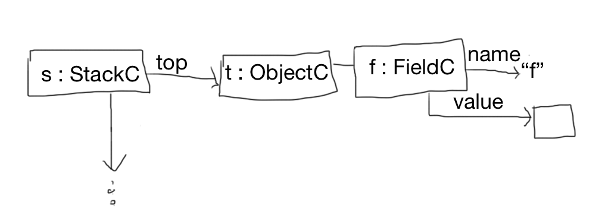
Now suppose the two assignment expressions are executed.
b := 5
f := lambda( a ) { a + b }
Before the second assigment happens, we need to evaluate the lambda expression. Lambda expressions evaluate to ClosureV objects. Let's call the new closure object c. Its .function field points to the abstract syntax tree representation of the lambda expression (i.e. to a model object that was produced during editing). c's .context field will point to s.
For the f := c assignment to happen, we need to find f's representation. This is done by the following algorithm.
function lookUp( varName : String, stack : Stack ) : Field or null
if stack == null then null
else if stack.top has a field whose name is varName then that field
else lookUp( varName, stack.next )
Running this function with arguments "f" and s finds f. Executing f := c means , the .value field of the Field object f is set to point to c.
After the two assignment expressions are evaluated we have:
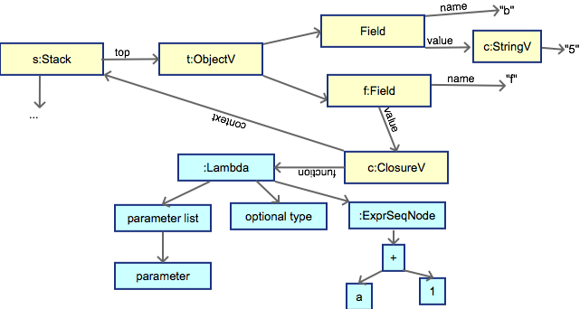
[In this diagram and the next few, blue nodes are part of the static model. Yellow nodes are part of the run time model.]
Now consider the third line: f(3). The variable f is evaluated by running lookUp("f", s), which results again in f and then the .value field is taken. So the value of the f is a closure represented by c. Next the string 3 is evaluated, this results in a StringC object, call it 3. Now the closure is applied to its argument. To do this we first construct an "activation record". (activation records are also known a "stack frames".) The fields of the record correspond to the parameters of the function. So we have a new ObjectV object (call it r) with one field (all it a). Of course a.name is "a" and a.value is 3. And we construct a new Stack object (call it s1). s1.top is r and s1.next is s.
Note that s1.next is s because s is the context field of c. In general, we build the stack for evaluating a closure by making a new object to represent its parameters and then make a new stack by combining that object with the context field of the closure. The effect of this is called lexical scoping.
Its a good time to update the picture.
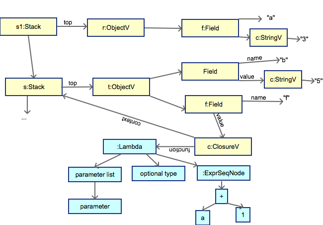
Now to complete the evaluation of the expression f(3), we evaluate the expression a + b using s1 as the stack. So now, when "a" is looked up, the a field is found and its value is 3 and when "b" is looked up the field representing b is found. After the addition, the result is a StringV object representing a 8.
Now add a couple of lines so we have
b := 5
f := lambda( a : Num ) { a + b }
f(3)
b := 6
f(3)
The second call results in an object representing 9.
The need for the context is really shown when we call a closure somewhere far away from where it is created.
Consider
var b : Num := null
f := lambda( a : Num ) { b := a }
g( f )
Somewhere deep in g, there may be a call to the closure stored in f. It is important that at that time the lookUp routine finds the b that was declared in the code above. This should be true even if g declares a variable called "b".
A closure may be called even after the subroutine in which it was called has returned. Consider the following code
con scale := lambda( a : Num ) {
lambda(x : Num ) { a * x } }
con double := scale( 2 )
con triple := scale( 3 )
So that double(42) gives 84.
When scale( 2 ) is called, the value is a closure created by the evaluation of lambda(x : Num ) { a * x } in a context where "a" is bound to 2. This context is captured retained in the closure.
Exercise. Draw a picture representing the stack after these three declarations are done. To do that you should know that each var or con declaration pushes another Stack object on the stack. So after these three declarations have executed, the stack should consists of at least three objects, each with one field. Also you should know that the initialization expression is evaluated using the new stack. So the context for the value of scale will point to the activation record in which "scale" is the name of the field. This makes it easier to write recursive functions.
Now suppose there is a call double(3). Draw the stack in which a * x is evaluated.
Finally closures are used to allow fields of objects to be looked up by the classes methods. Consider a class
Class Counter
var a := 0
con incr := lambda() { a := a+1 }
con get := lambda() { a }
An ObjectV o representing a Counter object has a sequence of 3 Field objects. The closures representing the incr and get methods have o as the top of their context. This means that when "a" is looked up during execution of a method's body, the field in object o will be found. This is why we use the same data type to represent both activation records and objects made by classes.
One issue I'm ignoring here is the ability to undo steps taken during evaluation. If we use the transactional memory approach, then nonconstant fields above need to be implemented by transactional variables. For example
class Field
con name : String
var value : Value
con type : Type
con isConstant : boolean
would be implemented by
class Field
con name : String
con value : TVar<Value>
con type : Type
con isConstant : boolean
See http://sourcephile.blogspot.ca/2011/04/how-to-do-undo-and-redo.html
See the Static-model document.
The evaluation process described above could be implemented using the interpreter pattern. We aren't going to use it, but it may be worth taking a quick look at it.
The interpreter pattern works by giving each node of the abstract syntax tree an eval method that takes a stack as an argument. For example for AST nodes representing variables we have
method eval( s : Stack ) : Value
con v := lookUp( this.name, s )
if v == null then throw an exception
return v.value
For a node representing addition we would have
method eval( s : Stack ) : Value
con x = this.left().eval(s)
if x does not represent a number, throw an exception
con y = this.right().eval(s)
if y does not represent a number, throw an exception
con z := the sum of the numbers represented by x and y
con str := z turned into a string
return new StringC( str )
For sequences (ignoring that sequences can contain variable declarations) we have
method eval( s : Stack ) : Value
var val := new DoneV
for each e in exprs
val := e.eval( s )
return val
For a lambda expression we would have
method eval( s : Stack ) : Value
return new ClosureV( this, s )
For a nodes representing the application of a function to arguments (i.e. nodes labeled by CallClosureLabel), we would have
method eval( s : Stack ) : Value
con c := this.function.eval( s )
if c is not a ClosureV then throw an exception
con as := [this.args[0].eval(s), this.args,[1].eval, ... ]
con ps := a list of parameter names obtained from c.function
if a[0] is represents a value not of type p[0].type, throw an exception
and so on for all the arguments
// Make an activation record.
con fs := [new Field( ps[0].name, vs[0]), new Field( ps[1].name, vs[1]), ... ]
con activationRecord := new ObjectV( fs )
// Note that the new stack uses the context from the closure.
con s1 := new Stack( activationRecord, c.context )
return c.function.body.eval( s1 )
However, we want to be able to do debugger-type single-stepping. So we need an alternative to the interpreter pattern that lets us intersperse small bits of evaluation with waits for user input. There might be a way to make it work by using concurrency. But JavaScript does not support concurrency. There might be a way to make it work using the TBC library, but that would be rather tricky, I think.
The solution below is based very much on the way the same problem is solved in the Teaching Machine.
The state of the execution of a program is represented by an object called the virtual machine state. It will probably have a lot of fields and methods, but I'll just start with one and add more as needed
class VMS
con evalStack := Stack<Evaluation>
An evaluation represents the state of the evaluation of a single expression. This expression might be the body of a function, which is why we need a stack. If we execute a sequence
var c := 4
var b := 5 + c
f := lambda( a ) { a + b }
var x := f(3)
x
there will be one evaluation representing the sequence and then one evaluation representing the evaluation of the body of the closure.
Let's start with a simpler example that only uses one evaluation. Then we'll come back to the example above.
Suppose we want to evaluate an expression a+b in a stack s that has a and b as fields. We make an evaluation that has a pointer to the AST node for a+b, this is called the root of the evaluation. The evaluation also has to keep track of which parts of the tree have been evaluated and which have not and, for those that have been evaluated, what value they evaluated to. This part of the evaluation is called its map. The map maps paths to Value objects. (A path is a list of numbers represents the location of a node in the tree -- e.g the empty list represents the root, (0) represents the roots first chile, (0,2) represents the third child of the first child of the root, etc.) An evaluation also has an optional path called pending and a flag called ready.
class Evaluation
con root : ExprNode
con stack : Stack
con map : MutableMap<Path, Value>
var pending : Path or null
var ready : boolean
The evaluate a+b we start by making an evaluation that has the Plus node as its root. It has s as its stack. Its map is empty. pending is the empty list and ready is false. pending indicates the next node to operate on, so the empty list indicates the root. ready means that the node indicated by pending is ready to be stepped (evaluated). In this case ready is false, so the root is not ready. Here is the state of the evaluation initially
.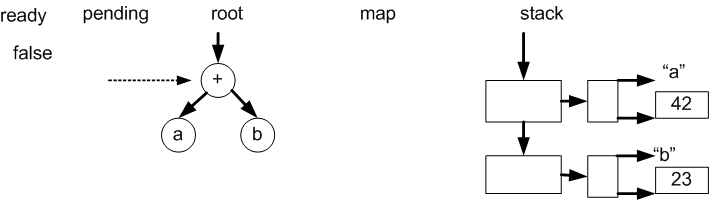
In single step mode, the user will see the the expression being evaluated turn into a value bit by bit. That is they will see the following succession of states of evaluation
a + b (and the a node is highlighted and the a field on the stack is highlighted)
42 + b (and the b node is highlighted and the b field on the stack is highlighted)
42 + 23 (and the + node is highlighted)
65 (and no node is highlighted)
Here is what is happening in terms of the evaluation:
* A select message is sent to the pending node (the root).The root decides to evaluate its left child first (left-to-right selection strategy). So it makes its left child pending (i.e. it sets pending to (0) and forwards the select message to that node. The a node selects itself by setting ready to true. It also looks up the a field on the stack and high-lights it. The state is
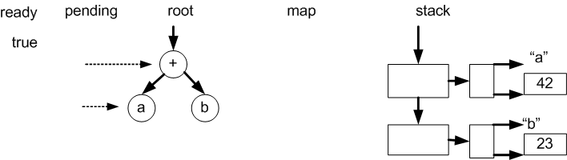
The user sees: a + b (and the a node is highlighted and the a field on the stack is highlighted)
* Since ready is true, a step message is sent to the a node (it being the pending node. The step method of the a node looks up the a field on the stack (again) turns off the highlighting of that field and maps its path to the value of that field. It also sets pending to its parents path (by removing the rightmost number from pending). The state is
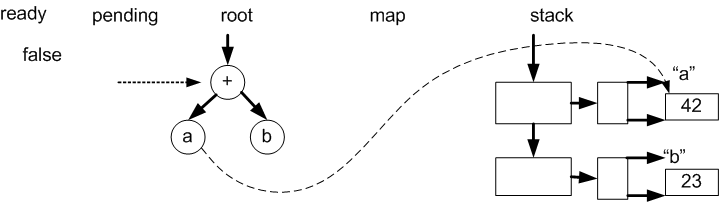
* Since ready is false, a select message is sent to the pending node. This time, since its left child is mapped, it decides to evaluate its right child next. The rest is similar to what happened above. The user sees: 42 + b (and the b node is highlighted and the b field on the stack is highlighted). The state is
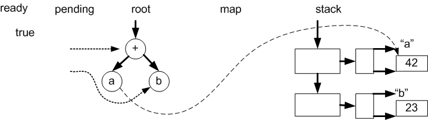
* Since ready is true a step message is sent to the b node. The step method for the b node is the same as that for the a node. So, the node is mapped to the variable's value, highlighting is turned off, pending is truncated, and ready is set to false. The state is
* Since ready is false, a select message is sent to the pending node. This time, since all its children are mapped, it is ready to be stepped, so it sets ready to true. And the user sees 42 + 23 (and the + node is highlighted)
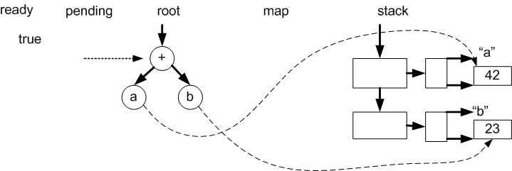
* Since ready is true, a step message is sent to the pending node. This is the root. It looks at the values of its children (using the map), adds them, and maps itself to the resulting value. And the user sees. 65 (and no node is highlighted) . The evaluation is done. Since pending is empty, it can't be truncated, instead it is set to null. The state is
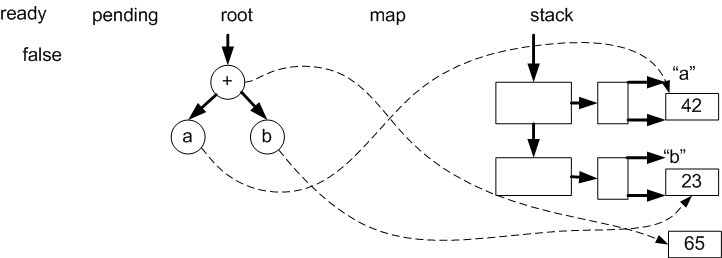
The VMS is pushed forward by a call to its advance method. Each * in the above example represents a call to advance.
class VMS
...
method canAdvance()
return evalStack.notEmpty()
method advance()
pre canAdvance()
if evalStack.top().isDone()
con value := evalStack.top()
evalStack.pop()
if evalStack.notEmpty
evalStack.top.setResult( value )
else
evalStack.top().advance( this )
An evaluation is done when its root has been evaluated, which is indicated by pending being null, or equivalently by the empty path being in the domain of the map.
class Evaluation
...
invariant: pending==null iff the empty path is in map.domain()
method isDone()
return pending==null
The advance method for an evaluation either does a selection or a step
class Evaluation
...
method advance( vms : VMS )
pre not isDone()
// and therefore pending is not null
var topNode := root.get( pending )
if ready then
topNode.getLabel().step( vms )
else
topNode.getLabel().select( vms )
Here root.get( pending ) returns the node that is found starting at the root and following the path.
The rest of the work is done in the step and select methods for the AST labels.
(In reality, the real work of stepping and selecting would be delegated by the node to its label, since the same node class is shared my many different labels.
Many nodes use the left-to-right selection strategy. The Plus node would be an example. The left-to-right strategy is this. Note that select messages are only ever sent to the top pending node.
method select( vms : VMS )
con eval := vms.evalStack.top()
con pending := eval.pending
pre pending != null
and eval.root.get(pending).getLabel() = this
if all pending's children are in the domain of eval.map then
// Select this node.
eval.ready := true
else let i be the number of the first child of pending
not in the domain of eval.map
eval.pending = pending ^ [i] )
node.children[i].select( vms )
[This is the most common selection strategy, so this could be the default. Exceptions to the normal strategies can be overrides.]
For "if" nodes selection is like this
method select( vms : VMS)
con eval := vms.evalStack.top()
con pending := eval.pending
pre pending != null
and eval.root.get(pending).getLabel() = this
con ifNode := eval.root.get(pending)
con guardPath := pending ^ [0]
con thenPath := pending ^ [1]
con elsePath := pending ^ [2]
if guardPath is in the domain of eval.map then
if guardPath is mapped to a value representing "true" then
if thenPath is in the domain of eval.map then
eval.ready := true
else
eval.pending := thenPath
ifNode.children(1).getLabel.select( vms )
else guardPath is mapped to a value representing "false" then
if elsePath is in the domain of eval.map then
eval.ready := true
else
eval.pending := elsePath
ifNode.children(2).getLabel().select( vms )
else error!!
else
eval.pending := guardPath
ifNode.children(0).getLabel().select( vms )
For nodes representing variables, selection is simple
method select( vms : VMS )
con eval := vms.evalStack.top()
con pending := eval.pending
pre pending != null
and eval.root.get(pending).getLabel() = this
look up the variable in the stack and highlight it.
eval.ready := true
Sequence nodes simply select each child in turn and then once all the children have been mapped, the sequence itself is selected. If there are variable declarations in the sequence things might get a bit more interesing.
Stepping also depends on the node type. For plus nodes
method step( vms : VMS )
con eval := vms.evalStack.top()
pre eval.pending != null
and eval.root.get( eval.pending ).getLabel() = this
and eval.ready
get the values mapped by the two children
if both represent numbers,
con v := make a new number representing the sum
eval.finishStep( v )
else
error!
The last bit here is
class Evaluation
...
method finishStep( v : Value ) is
pre pending != null
and ready
map.add( pending , v)
if pending is empty then pending := null
else pending := pending without its last item
ready := false
For if nodes
method step( vms : VMS )
con eval := vms.evalStack.top()
pre eval.pending != null
and eval.root.get( eval.pending ).getLabel() = this
and eval.ready
con thenPath := eval.pending ^ [1]
con elsePath := eval.pending ^ [2]
var v : Value
if the guard maps to true
v := eval.map.get( thenPath )
else
v := eval.map.get( elsePath )
eval.finishStep( v )
For variable nodes
method step( vms : VMS )
con eval := vms.evalStack.top()
pre eval.pending != null
and eval.root.get( eval.pending ).getLabel() = this
and eval.ready
var f := lookUp( name, eval.stack )
remove highlight from f
eval.finishStep( v )
Stepping a sequence node is just a matter of copying the value of the last expression to the sequence. If there are variable declarations in the sequence, then sequences might be a bit more interesting.
So why do we need a stack of evaluations. The idea is that each level of the stack represents the evaluation of one function. So let's look at how a function call can be evaluated.
The select method for LambdaNode nodes just sets ready to true. The step method for LambdaNode nodes just creates a new ClosureV (using the stack field of the top evaluation for the context, and maps the LambdaNode node to the closure. So lambdas are simple.
For application of a function (i.e. closure) to a list of arguments, we use nodes labelled with CallClosureLabel. The select method for CallClosureLabel nodes uses the usual left-to-right strategy.
Before looking at the algorithm for step, let's look at what it needs to acheive. Suppose we are about to step the application in this sequence
f := lambda( a : Num ) { a + b }
b := 5
f(3)
The top evaluation on the stack looks like this
[Note class names in the diagram need to be updated.]
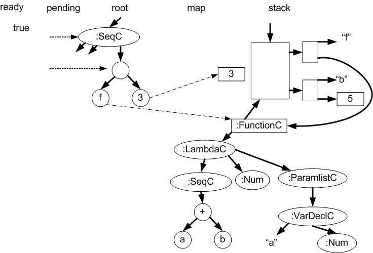
[I left out the two assignment expressions, which are the first two children of the root node, they are mapped to Done.]
After the application node has been stepped, a new evaluation has been pushed on to the stack and the top two evaluations on the stack look like this.
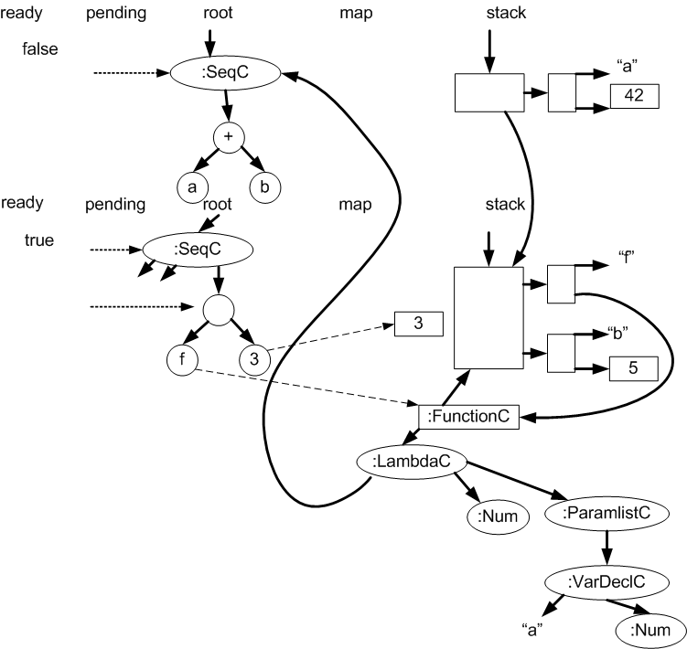
The step method for CallClosureLabel looks like this:
method step( vms : VMS )
con eval := vms.evalStack.top()
pre eval.pending != null
and eval.root.get( eval.pending ).getLabel() = this
and eval.ready
con functionPath = eval.pending ^ [0]
con c := eval.map.get( functionPath )
if not c isA ClosureV then error!
con c1 := c asA ClosureV
con f : LambdaNode := c1.function
con argList := [eval.map.get( eval.pending ^ [1] ),
eval.map.get( eval.pending ^ [2],.. ]
if the length of arglist not= the length of f.params.children then error!
if any argument has a value not compatible with the corresponding parameter type
then error!
var params := f.params.children
con arFields := [ new Field( params[0].name, argList[0] ),
new Field( params[1].name, argList[1] ),
.. ]
con activationRecord := new ObjectV( arFields )
con stack := new Stack( activationRecord, cl.context )
con newEval := an Evaluation with
newEval.root := f.body
newEval.stack = stack
newEval.map = an empty map
newEval.pending = the empty list
newEval.ready = false
vms.evalStack.push( newEval )
Note that unlike every other step method, this one does not truncate pending
So the step takes care of entering the function being called. What about function return? Here is advance for VMS again.
class VMS
...
method canAdvance()
return evalStack.notEmpty()
method advance()
pre canAdvance()
if evalStack.top().isDone()
con value := evalStack.top()
evalStack.pop()
if evalStack.notEmpty
evalStack.top.setResult( value )
else
evalStack.top().advance( this )
Once the function has executed as far as it can, its root node (i.e. the function body) will be mapped to its return value. The next call to vms.advance records this return value, pops the evaluation, and sends the return value to the next evaluation down the stack (i.e. the new top) using the setResult method. So what we need to do is implement that method.
class Evaluation
...
method setResult( value : Value ) {
pre: pending is not null and it indicates an application node
con node := root.get( pending )
// node must be a callClosure node
con closurePath = pending ^ [0]
con closure := this.map.get( closurePath )
// closure must be an ClosureV
con lambda : = closure.function
if lambda has a result type and the type of value
is not compatible
then error!
else
finishStep( value )
It would be nice if during execution one could edit the program, for example to fix mistakes or fill in missing parts. In order not to mess up any partially complete evaluations, it is important not to change some AST. For example if we deleted a node that is on a pending stack, that would cause problems the next time we send a step or select message that node. Luckly by using an immutable data structure to represent program nodes, this just can't happen.
pro: No restriction on editing.
con: Edits do not affect current evaluations and so the user may see "old code" when they return to execution mode.
precedent: This was done in the Sharp APL editor. It was also done in the 1985 implementation of Prograph.
The discussion so far has mostly ignored variable types [...]